华板在《华杉讲透孙子兵法》书中，反复强调的就是不败兵法，一生不败。华与华对企业的经营也是低风险偏好，永远把经营安全放在第一位。企业经营到最后，追求的就是不败，从创业成功走向企业成功，安全经营，在社会上保有一席之地，实现永续经营，永不出局。近年来，随着市场竞争的加剧和用户获取成本的上升，电商企业面临着前所未有的挑战。远明老酒，作为一个曾经专注于线上销售的企业，也感受到了这种压力。在线上流量越来越贵的今天，只靠纯流量打法，没有建立可持续积累的品牌资产，企业的获客成本只会越来越高。在这种背景下，品牌建设成为了电商企业实现安全经营的关键，也成为了企业想要实现基业长青的必由之路，远明老酒就是一个代表案例。本文，我们将为你分享合作 3 年来，华与华通过以下三大关键动作，帮助远明老酒从品牌筑基到打通全域的详细过程：
1 、品牌筑基：品牌三角建立品牌壁垒，品牌文化赢得产品解释权，开创白酒行业信号最强的第一个人格化品牌！2 、产品开发：营销日历+产品开发+私域促销三位一体，成为节日爆款、多次断货！3 、打通全域：从线上到线下，通过创造独特的经营活动，建立流量生态，获得经营安全！
项目背景从 2018 年开始，在线上平台的流量红利期，远明老酒凭借任远明极具识别性的个人形象及对传统酿酒工艺的传承和坚持，以及和梁宏达等明星的合作，快速成为全网种草、达人明星纷纷推荐的大爆品。远明老酒独有的酒厂直达消费者模式，作为中国首个 D2C 白酒品牌，没有中间商赚差价，真正实现了超高性价比！线上百亿级曝光，和颠覆性的性价比，让远明多次获得抖音爆款榜第一，也让远明老酒成为了中国第一个互联网知名白酒品牌！在这期间，企业营收实现了快速增长，但也面临了新的课题：越来越多的商家入驻线上平台，流量成为了一种资源，一种权利，平台对商家从原来的流量扶持、流量贴补，变
成了流量分发、流量竞价，流量成本一天比一天高，如何实现消费者的指名购买，不靠竞价靠品牌？带着这个课题，远明老酒与华与华于 2021 年达成了合作，就此开启了远明老酒“中国酱酒第一个人格化品牌”之路。在我们与远明老酒合作的这 3 年，我们首先解决了品牌战略，通过品牌定型，为远明建立了“中国酱酒第一个人格化品牌”，建立品牌资产储蓄罐，通过建立品牌文化，为未来百年企业的发展道路奠定基础。然后解决营销战略，从线上到线下，构建起自我生发与平衡的流量生态，获得经营安全。同时，我们也通过有文化母体的营销日历和产品开发，赋能远明的线上、私域销售，建立品牌资产，降低线上获客成本。
1品牌三角建立品牌壁垒开创白酒行业第一个人格化品牌根据世界管理之父，彼得·德鲁克在《德鲁克管理思想精要》一书中对企业的定义：企业是社会的器官，是一种社会的分工机制，任何一个组织机构都是为了某种特殊目的、使命和某种特殊的社会职能而存在的。所以当你想要找到你的企业位置的时候，你首先是要找一个社会分工，所谓定位就是要定你的社会分工。一个社会问题就是一个商业机会，企业是社会的器官，为社会解决了问题。
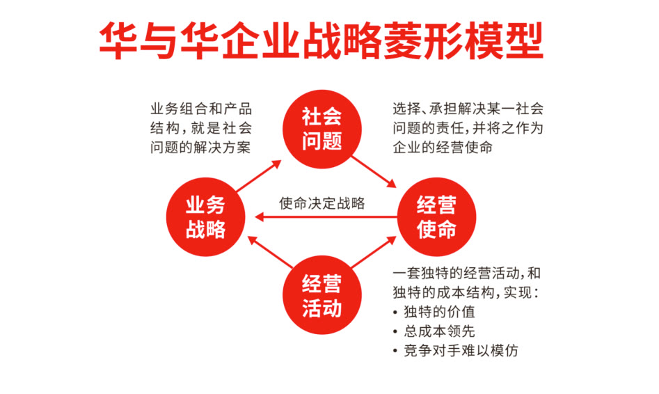
根据华与华企业战略菱形模型，企业选择、承担解决某一社会问题的责任，并将之作为企业的经营使命，经营使命决定业务战略，企业通过业务组合和产品结构，为该社会问题提供解决方案。这就是企业要实现的社会效益，也是企业基业长青的基础和理由。那企业到底要为社会解决哪方面的问题，被社会赋予了哪方面的社会责任呢？华与华认为：要解决的社会问题必须具体，具体问题才有具体答案。“ 2018 年酱酒热开始蔓延，茅台的价格疯涨，消费者想买来自茅台镇的好酒，但买不到正宗好酒。”在这一洞察的背景之下， 2018 年远明初探线上白酒，一方面，远明通过公众号派单形式，让消费者实现更为方便得购买。另一方面远明打造品牌品牌守门人任远明 IP 形象，将个人信誉与产品绑定，让消费者买的放心。远明老酒的创始人任远明，作为中国酱香酒酿酒大师，他有众多的荣誉称号，包括仁怀市首届白酒协会会长、茅台镇商会会长，远明老酒也是贵州酱香型白酒技术标准起草企业、全国首批获得白酒工业生产许可证企业。
任远明有着“珍视身后名，不贪眼前利”的祖训！多年来也一直坚持茅台镇传统手工酿酒工艺，“有多少好粮就做多大规模，有多少老酒就做多大市场！”因此，他对那些只图产量、不守质量盲目扩张的企业非常担心，对那些重包装、轻酒质的过度宣传非常痛心，对那些不懂得专注、只会低价竞争的做法非常反感。用他的话说，那就是吃祖宗饭、断子孙路！
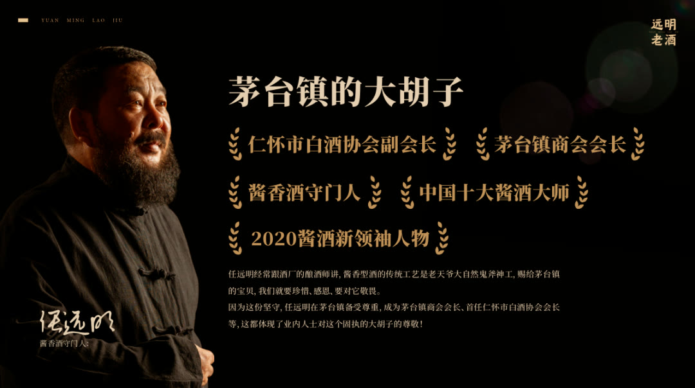
所以，华与华为远明老酒提出了经营使命：传承茅台镇酱香酒，坚守酱香酒老传统。立足茅台镇，传承的是传统酱香酒，为消费者提供传统工艺酿造、货真价实的酱香酒，成为酱香酒的首席知识官和资讯依赖者，满足人们对酱香酒的期望和想象。项目组对远明老酒的消费者进行了座谈调研，发现远明老酒在线上吸引用户关注的原因有三个：1 ）梁宏达，消费者认为老梁的人物形象可信，推荐的酒靠谱；2 ）“大胡子”任远明，消费者认为“酒业协会会长”的形象权威，酿酒“有经验”，“祖祖辈辈都是酿酒的”；3 ）产品形态是“酱酒”，“大厂不是小作坊”“茅台镇的酒”“生产车间和工艺”让人感觉放心。品牌人格化，不如人格化品牌品牌人格化，由品牌个性来促进品牌形象的塑造，通过品牌个性吸引特定人群。而人格化品牌，天然具备个性、精神，具备信任感。华与华通过市场调研发现，目前中国酱香酒市场没有人格化品牌，而远明老酒不管从品牌命名、已积累的品牌资产、创始人本身，都具备了人格化品牌的基础要素。因此，华与华为远明老酒制定了“茅台镇酱香酒第一人，就是中国酱酒第一人”的人格化品牌战略。
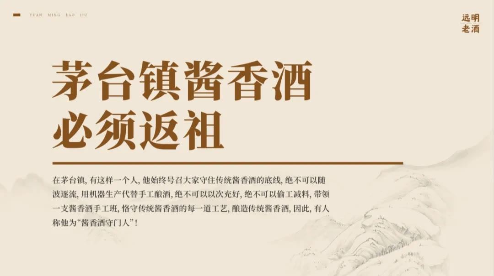
远明老酒是茅台镇酱香酒之一，但任远明是茅台镇大师唯一，让远明老酒成为中国酱香酒第一个人格化品牌！品牌谚语：口号即战略品牌口号是品牌和产品的价值承诺，最好的口号是带有战略性目的，是企业独特经营活动的体现，是任何竞争对手都无法模仿的优势。华与华为远明老酒创意了品牌谚语“茅台镇任远明 酱香酒守门人”。
这句话把茅台镇酱香酒的所有古老的、传统的都卷入了任远明。获得了茅台镇酱香酒的文化原力，成为茅台镇酱香酒传统的代表。我们没有极限用词，但是完成了极限的修辞！
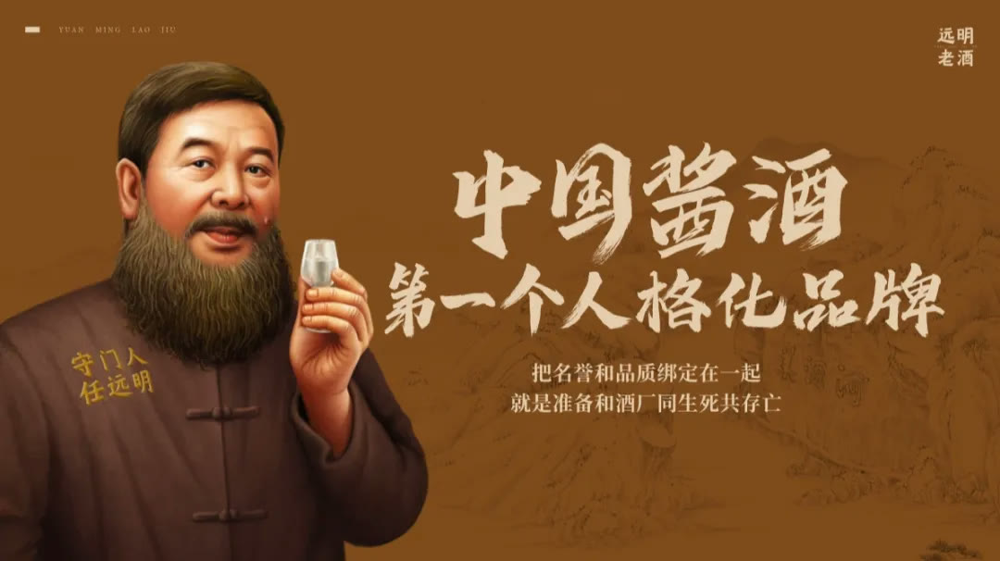
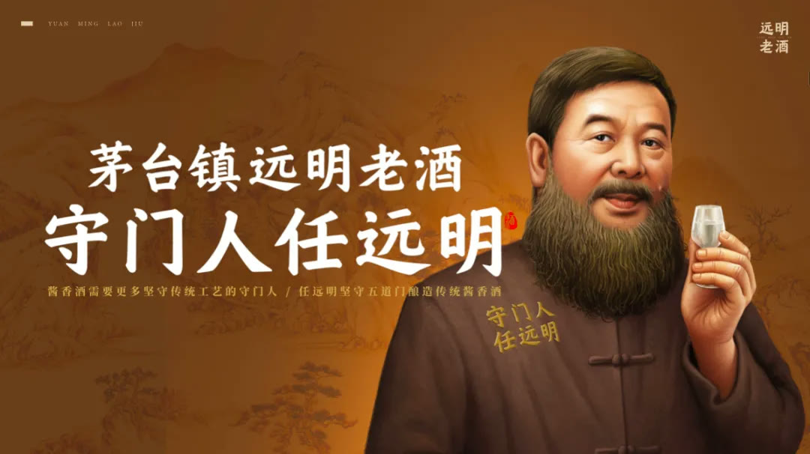
超级符号：产品包装就是符号，超级符号建立品牌壁垒，储存消费者的喜爱和体验华与华认为，战略、口号、符号所有事都是一件事，所有品牌资产积累在一个地方，所有品牌认知都是一个内容。一个超级品牌，就是一个伟大的符号系统。品牌要么始于符号，要么成为符号，通常两者都是。所以，建立品牌就是建立符号系统。品牌就是一套符号系统，这套符号系统是用来建立消费者的预期，而产品则是来满足这个预期，从而使符号更有价值。对于白酒行业来说，产品包装就是符号。华与华项目组为远明老酒重新设计了产品包装。
我们用三大识别符号统一远明老酒所有的产品包装，建立品牌资产。让所有产品都积累超级符号，超级符号能销售所有产品。最终实现把一个产品卖给所有人，把所有产品卖给一个人，把所有产品卖给所有人！
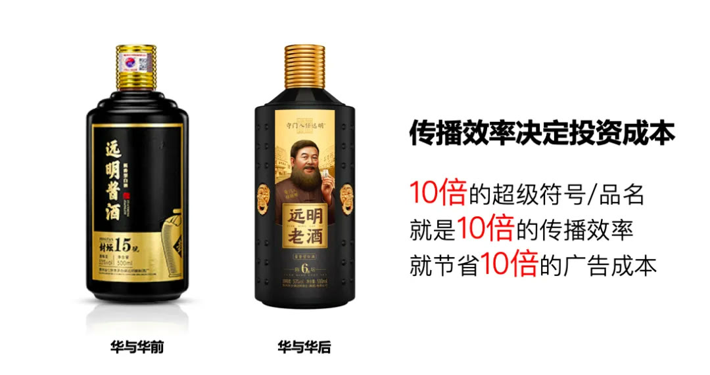
品牌文化：建立酱酒新文化，赢得产品解释权文化是人类在社会历史实践中，所创造的物质财富和精神财富的总和，有时特指精神财富。而在华与华，我们也把每个行业的企业都分两种：有文化的品牌和没文化的品牌。我们说品牌就是一套物质财富和精神财富的集合，但目前在一个行业里，只有少部分品牌能理解文化，进而拥有文化。远明老酒，就是少数真正拥有文化的白酒品牌！对于白酒行业，品牌文化的重要性不言而喻，建立酱香酒新的文化表达，让它成为这个行业中的新类别，就可以赢得解释权，就拥有了话语权。茅台的产地文化“出了茅台镇就酿不出茅台酒”、泸州老窖的窖池文化“窖池越老酒越好”...都是如此。
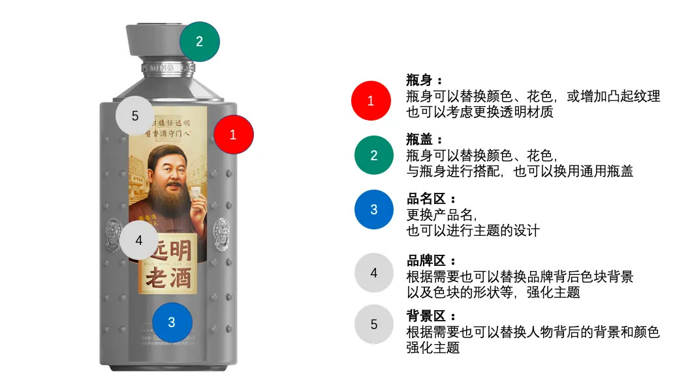
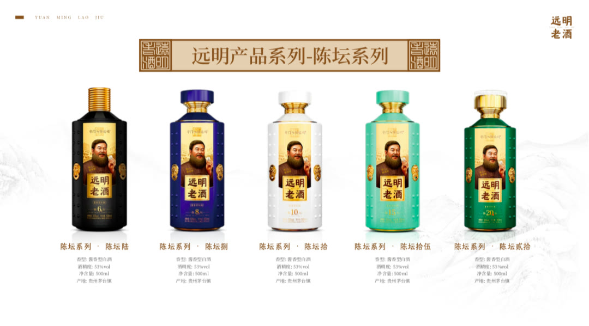
品牌寄生在文化母体之中，形成一套事业理论即产品价值观，在产品价值观的基础上建立起一套产品科学和话语体系。一个品牌，一定要是某些方面知识领先。知识就是力量，知识就是营销力量。知识体系转换为企业的话语体系来表达，也就是华与华所说的产品科学。在品牌战略的基础上，华与华为远明提出了一套以「守门人」为原点的产品价值点，茅台镇首个酱香酒基本法：传统酱香酒，守好五道门。
这是一套独立的、完备的科学体系，能够让人理解的、认可的、信服的价值标准。白酒行业有这样一句俗语“粮是酒的肉，曲是酒的骨，水是酒的血，酒师是酒的魂！”每瓶酒风味的形成，都离不开酿酒师。
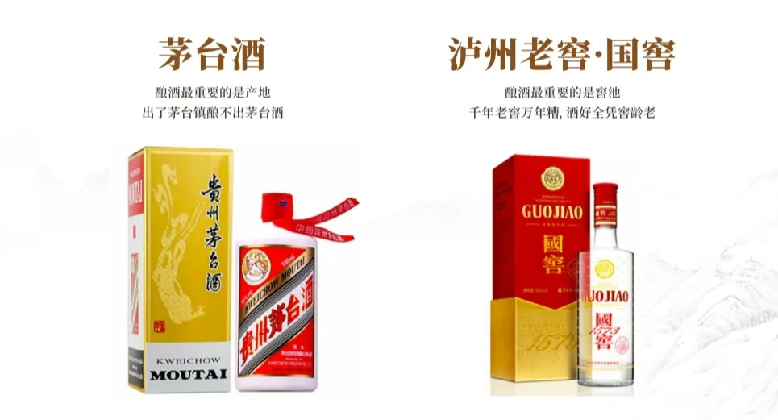
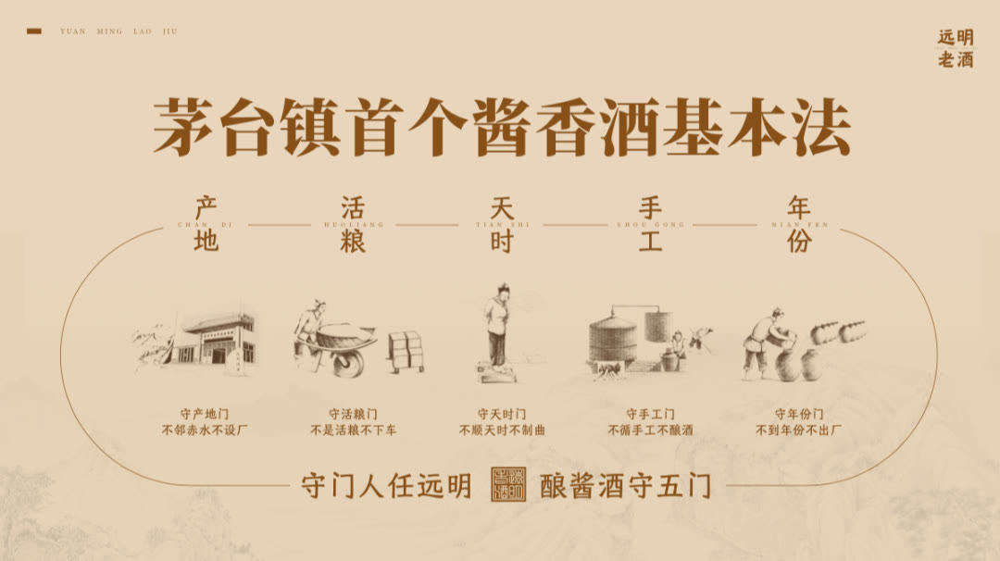
从远明老酒的「守门人」品牌战略出发，华与华为远明提出酿酒人文化和全新的产品价值观“酱酒好不好 关键是酿酒的人！”，进一步解释远明产品科学：“每一瓶远明老酒，都由酿酒大师手工酿造！”
找到了酿酒人文化，远明老酒还需要发扬和壮大酿酒师的文化，提高酿酒师守门人的地位！酿酒师地位越高，远明老酒价值越大。当酿酒师成为判断酱酒的第一标准，远明老酒就成为第一品牌！1 ）酱酒行业首个酿酒师的节日——酒师节，酿酒最重要的是酿酒的人！华与华为远明老酒提出了举办“酱酒行业首个酿酒师的节日——酒师节”。以「酿酒最重要的是酿酒的人」为活动主题，邀请赤水市政府一起举办，用主题建立新观念，与全体酿酒师站在一起，为酿酒师发声，致力于提升酿酒师社会地位！
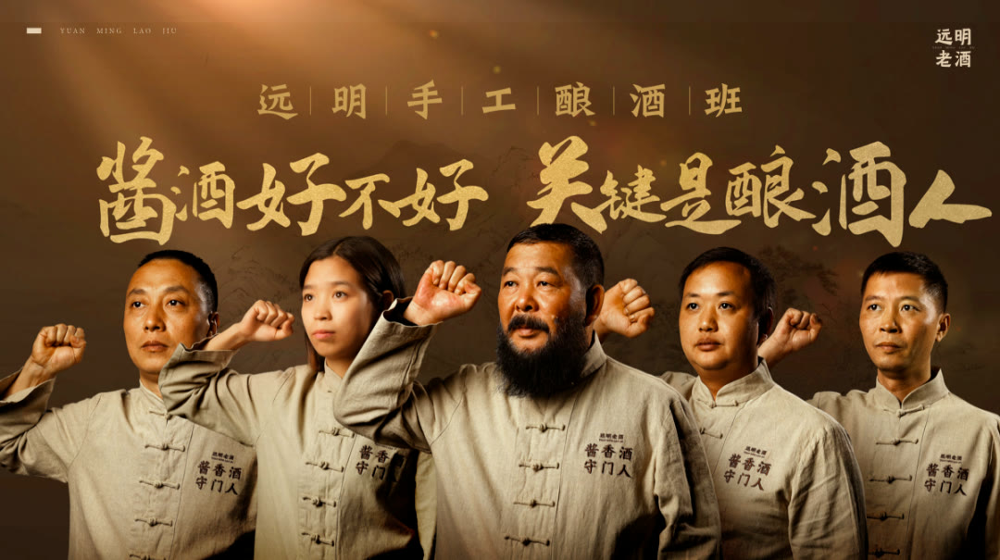
2 ）茅台镇第一个酿酒人主题沉浸式体验酒厂，开茅台镇酱酒酒厂先河！对于白酒企业来说，酒厂回厂游是重要的用户体验环节，也是能够形成品牌资产，也就是品牌言说的关键环节。远明酒厂的改造，是远明酒业酿酒人文化战略中的重要一环。华与华为远明创意了茅台镇第一个酿酒人主题沉浸式体验酒厂，从策略提案、到体验规划、到画面设计到执行监工，到品牌发布，全程历时 515 天，打造一个有酿酒人文化、有沉浸式体验、有产品价值传达的远明老酒的品牌道场！开茅台镇酱酒酒厂先河。别人都是走马观花，看着酿酒的过程，在远明是能够体验一个酿酒师的全过程。从看酿酒到自酿酒，建立白酒行业回厂游的新高度，了解酱香酒守门人，是如何守好五道门
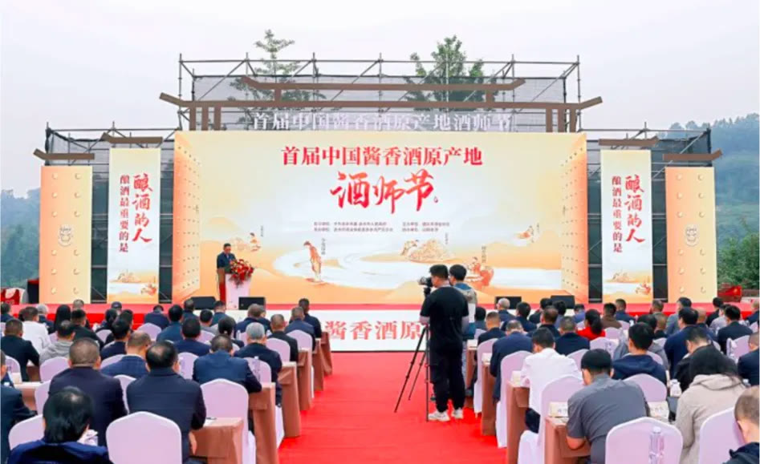
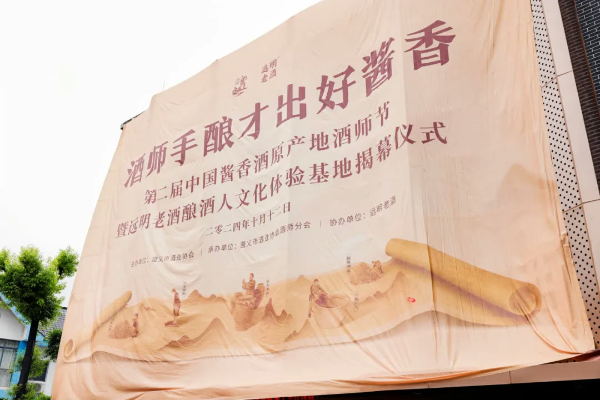
的！远明酒厂的核心价值是任远明带领，全程体验“酿酒人”的酿酒过程。
远明酒厂落成后，成为茅台两大文化基地，当地领导也说：“现在整个茅台镇只有茅台和远明，在做文化了！”
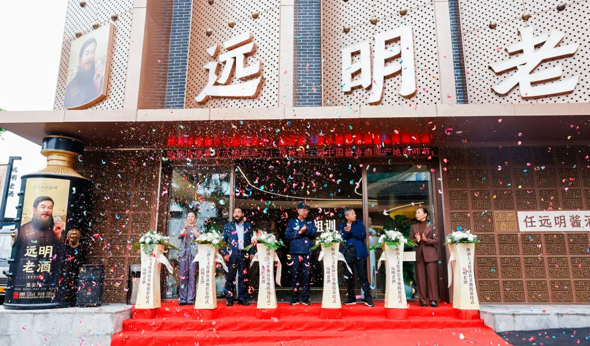

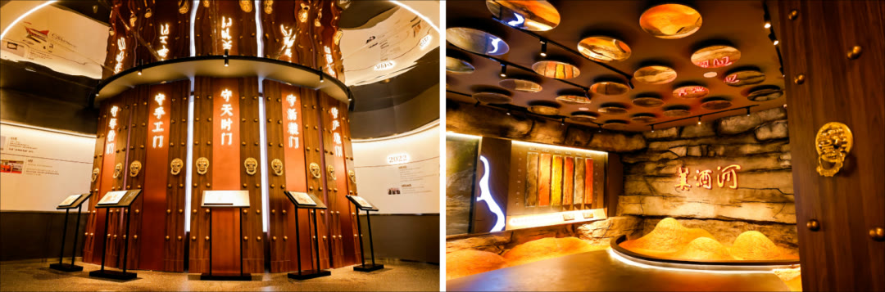
远明老酒酿酒人文化体验之旅也正式开启，为销售邀约客户提供了最强品牌道场。客户在参观酒厂的每时每刻都接收品牌文化，销售有内容可讲，客户来得有价值。开放 2 个月来，已经实现上千人的回厂体验，参与回厂游的客户成交金额是之前的 3 倍！3 ）守门人战略活动：远明老酒 315 假一赔百万承诺发布！对电商品牌来说，流量成本不断攀升，纯流量打法难以为继。当内容电商平台的用户量不再大幅度上涨，平台开始鼓励创作者提供优质内容，以吸引用户停留更多的时间。2024 抖音创作者大会公布的数据显示，今年上半年，抖音对优质内容的激励达到去年的 3 倍。所以现在内容电商平台的核心打法，就是创造内容，以优质的内容激发用户兴趣，来撬动自然流量，形成自传播。大部分品牌现在在电商平台上的促销活动，都是以短期拉动销售为目的的销售活动，最终的成果是业绩增长。而华与华的品牌营销日历，是在品牌战略的主线上，举办拉动销售的品牌活动，在业绩增长的基础上，建立可持续累积的品牌资产。华与华认为，线上传播内容有三大要素：信号能量够强、具备传播效应、传达产品价值。项目组以内容电商营销日历=通过营销事件 X 内容二创 X 转化内容的传播规划，在远明老酒「酱香酒守门人」的品牌战略基础上，为远明老酒提出“ 315 假一赔百万”活动。
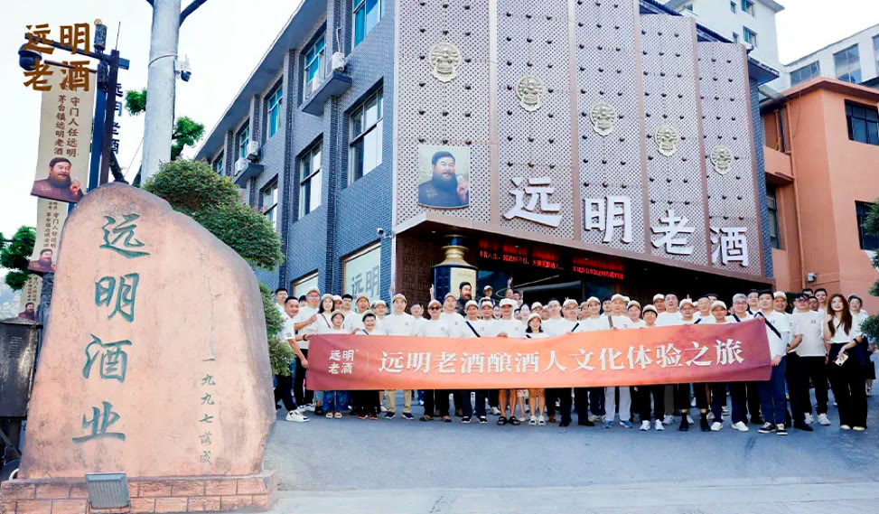
在 315 这个特殊的时间节点，以有社会价值的活动话题实现品牌知名度提升，以“百万”作为强刺激信号，通过承诺宣誓活动放大远明老酒纯粮大曲酱香的产品价值。315 期间，任远明及全体远明酿酒人以酱香酒守门人的名义宣誓，新华网、凤凰网、网易、界面等 40 +主流媒体、大 V 争相报道！在公域实现了品牌资产的积累。
该活动一经举办，活动素材成为远明老酒私域销售的标配话术，为新客销售提供产品品质背书，实现成单率提升。并且，远明老酒用该事件写成微信文章进行投流，打通腾讯亿级获粉渠道！
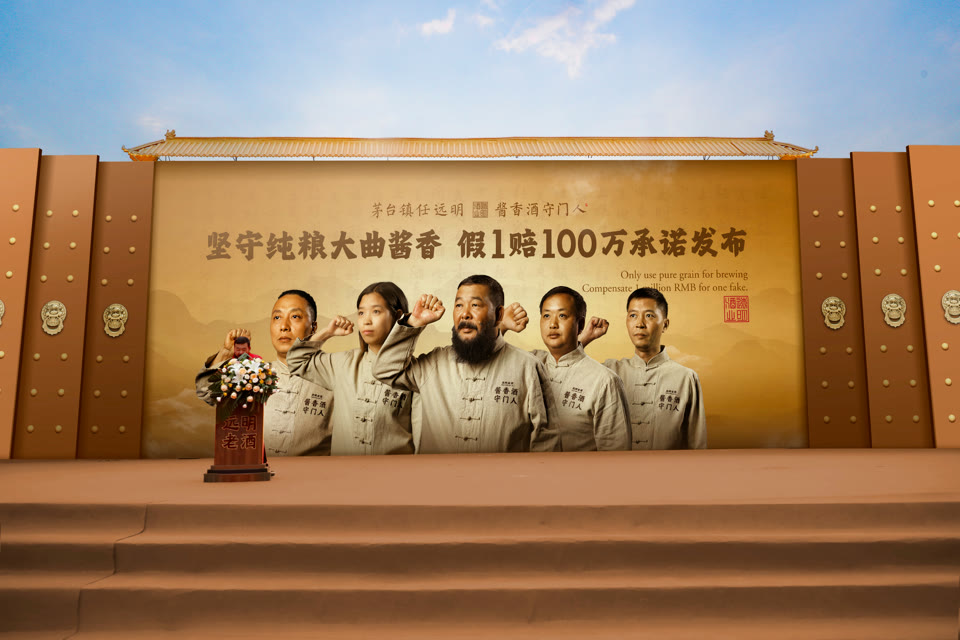
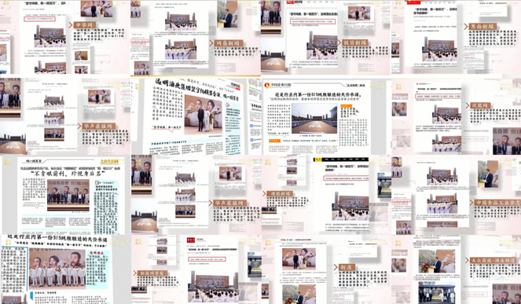
口号就是战略，口号就是投资，口号就是行动。确定了以【茅台镇任远明 酱香酒守门人】的品牌战略，拥有了超级符号，也就拥有了能够持续投资的品牌账户，有了安全经营、永续经营的基础和未来。
2营销日历+产品开发成为节日爆款、多次断货远明老酒一直以来都采用了双域营销模式，作为中国首个 D2C 的白酒品牌，远明老酒构建了强大的私域销售团队。将公域流量引入私域，并通过私域流量的有效转化和利用，引导客户在私域中完成高频次、高客单复购，实现销售额的快速增长和品牌影响力的扩大。这不仅为远明老酒带来了巨大的商业价值，也为整个酒类电商行业提供了新的发展思路和方向。在这套先进的双域打法中，最重要的是如何解决私域复购问题。华与华认为，产品就是购买理由，顾客的每一次购买行为，其实都是基于购买理由而发生的。产品结构就是企业的发展路线图，企业战略就是产品战略。企业想要安全经营、永续经营，就需要产品持续不断的销售力和利润，也就需要持续不断赋予产品新的购买理由。华与华产品开发的逻辑，就是从消费者端入手，先洞察一个购买理由；再通过命名来传递产品价值；然后创意一句购买理由；接着设计好产品包装，甚至我们还会想好推广创意。预判这个产品会销售，才交给客户把这个产品开发出来。这也就是华与华在产品开发的方法上提出的后工序决定前工序， “先有商品企划，再有产品研发”。
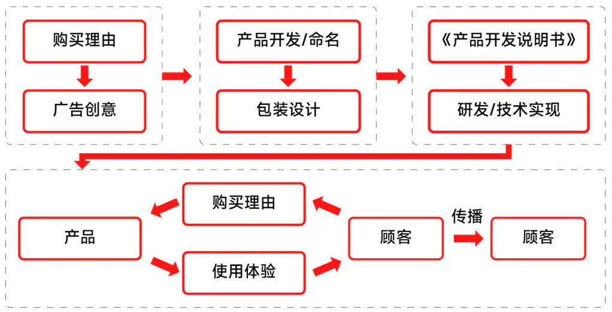
我们将产品开发与远明本来就有的促销活动相结合，实现营销日历+产品开发+私域促销三位一体，贯穿起远明老酒全年销售节奏，用持续不断的新的购买理由，拉动私域销售！春节：过新年，开老酒春节是喝酒的高峰，而在酒文化里，重要时刻或者招待重要客人，开瓶老酒是有文化母体的，“把我那 10 年的老酒开了”。远明老酒品牌名中的“老酒”，正暗合这一戏剧性，“老酒”是远明的品牌名，命名即购买理由，每一瓶远明酱酒都是老酒！因此，华与华为远明创意了春节营销日历“过新年，开老酒”，借用“新年庆祝”和“庆祝时刻开老酒”的文化母体，能够建立“过新年开老酒”的文化习俗，每年新年都要开老酒！每年新年都要举办新年开坛大典，在开坛大典上，正式发布新年纪念酒产品。
远明的春节纪念酒命名为“新年开坛酒”，远明老酒的新年酒，每一瓶里都有新年刚开坛的老酒，为远明老酒附加封坛老酒的价值属性。纪念酒下的系列产品，则基于守门人的品牌资产创造附加价值和使用体验，分别以“开门红”（封坛）和“开门大吉”（陈坛）两个名字命名。2024 年 1 月，远明老酒发行龙年生肖纪念酒，距离春节还有 19 天，提前售罄，春节销售额突破 1 亿元！
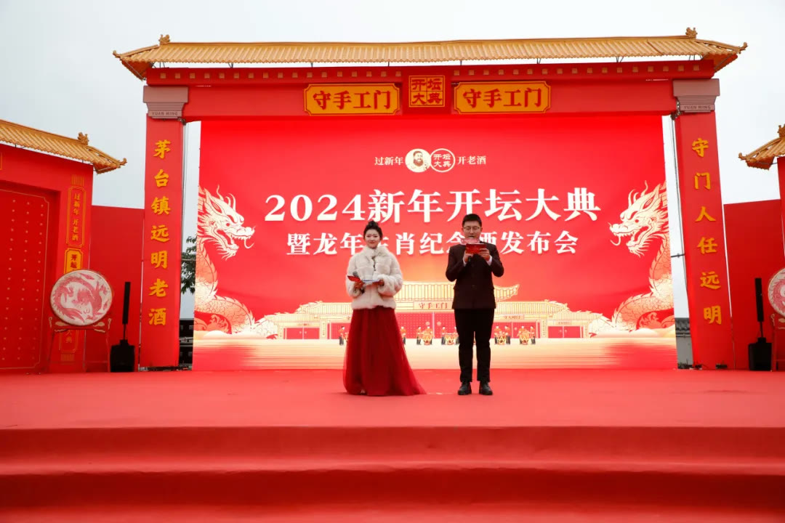
端午：远明老酒·端午制曲大典 不守天时不制曲端午制曲大典是酱酒行业的传统节日，根据酱酒每年固定的生产周期，多数白酒企业都会在端午举行大典仪式，开启制曲的生产环节。远明老酒同样如此。但怎么才能让这个行业内普遍在做的活动，积累品牌资产、赋能产品价值呢？根据远明老酒的品牌战略，“酱香酒守门人”就是要坚守老祖宗的传统，发扬光大传统工艺、文化、习俗，成为传统酱香酒的“传承人”“文化大使”“首席知识官”！在端午制曲大典活动中，目的是强化远明老酒纪念酒的品质和稀缺性，持续积累“酱香酒守门人”品牌资产，最终要回归到产品价值上 ，为产品背书。“酱香酒守门人”最大产品价值点就是“守好五道门”，所以华与华为远明老酒创意端午制曲大典的主题：「不守天时不制曲」 ，持续积累“酱香酒守门人”的品牌资产，传达远明老酒品质价值。
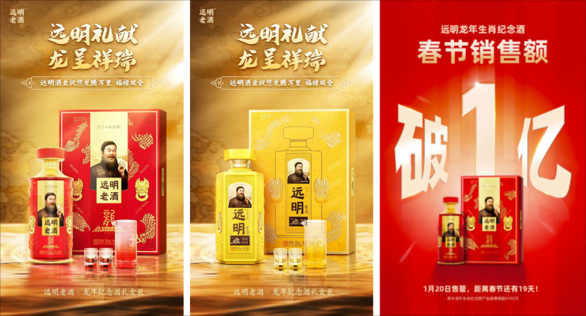
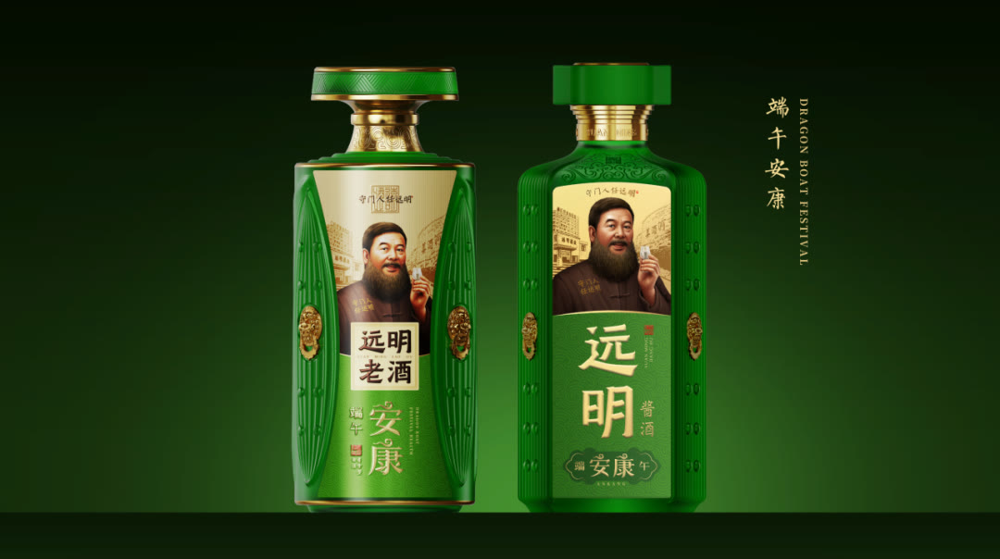
以事件带产品，通过举办端午制曲大典，发售端午纪念酒。并为销售渠道配套发行产品折页。每张折页，都是一次完整的销售进攻，都是一位可以自己“开口说话”的金牌销售！
中秋：白酒礼品化，敦煌IP联名放大「守门人」产品价值！白酒本身就有多重使用场景，除了作为自饮场景的快消品属性，还是礼品、收藏品，在产品上叠加不同场景更多的购买理由，就能卖得越多。华与华研究发现，在中秋期间，白酒最大的购买理由就是送礼。为了让远明老酒在中秋期间成为一份礼物，华与华为远明老酒找到敦煌博物馆的联名创意。敦煌博物馆作为 1600 年丝路文化的守护者，任远明作为酱香酒守门人，千年文化的守门人 X 千年酿酒工艺的守门人，为远明中秋纪念酒叠加了一个强有力的购买理由。前有嫦娥奔月的传说，后有敦煌飞天的加持，我们这次的产品命名定为：奔月。占据“月亮”和“飞天”这两个传统文化符号的机制、意义、品类感和消费者偏好，唤醒消费者从上古时代就被教育的关于中秋的文化母体，继承中国传统文化的原力。
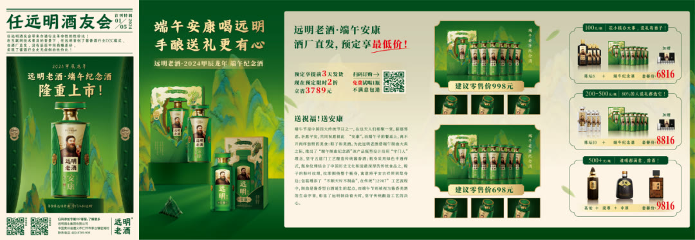
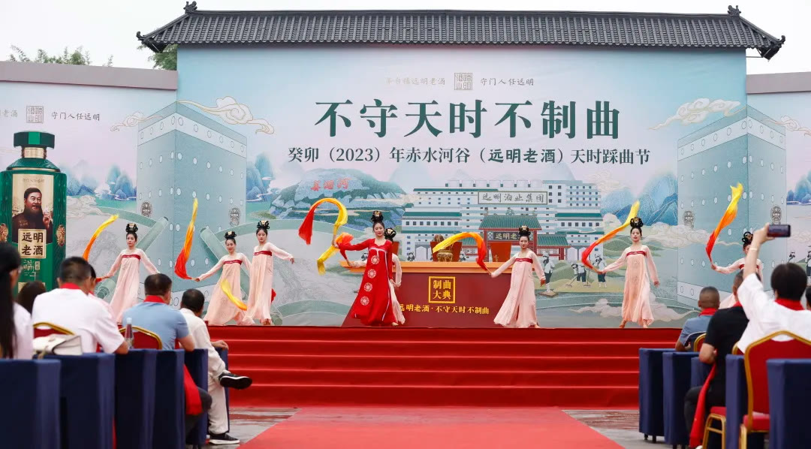
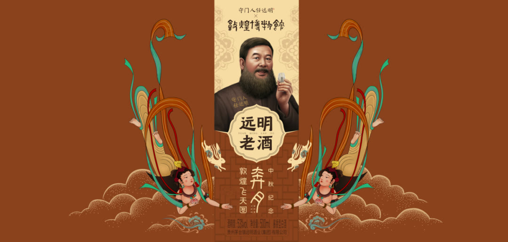
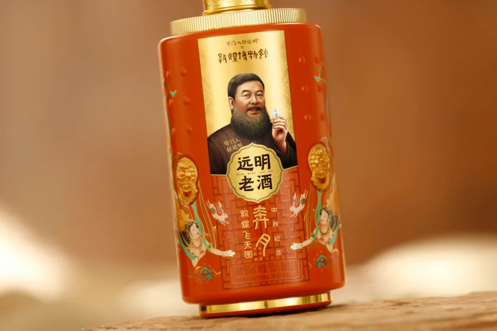
远明老酒奔月中秋限定纪念酒开售之后爆火，在中秋节前已全部断货！
3打通全域，从线上到线下建立流量生态，获得经营安全世界竞争战略之父迈克尔·波特提出：竞争战略关键是创造独特经营活动 ，有目的地选择一整套不同的运营活动，以创造一种独特的价值组合，从而实现三个价值，独特的价值、总成本领先、对手难以模仿。
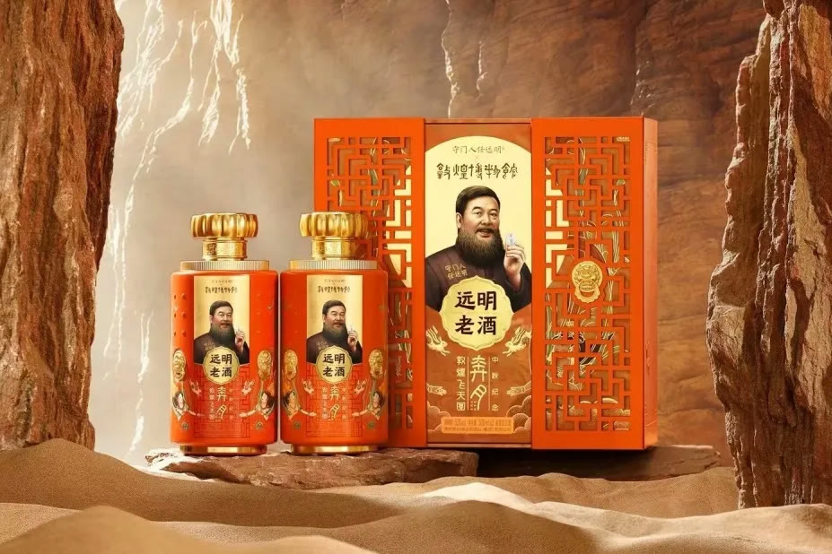
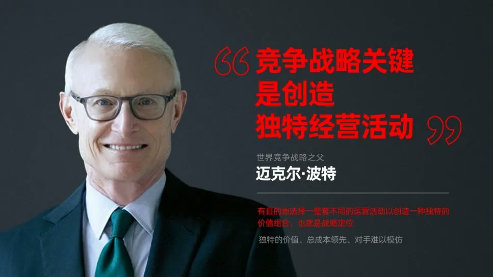
远明老酒就是通过线上获客销售的方式，打破白酒行业的线下渠道封锁，建立了新的商业组合。目前远明老酒形成的抖音销售获客、私域复购转化的双域打法，使远明老酒能比竞争对手承受更高的获客成本，以此建立起自己的独特价值，让竞争对手难以模仿，实现了总成本领先。对于企业经营来说，线上流量的魅力在于马上买、马上有。可凡是投入产出可控、可计算的，就是全国人民都有的技能，时间一长，就没有优势了。因为流量的议价权掌握在拥有流量的平台方，平台方通过竞价、价高者得的方式，将流量贩卖给出得起更高价格的企业，最终流量的价格会自动高到刚好让企业挣不到钱，企业的钱就全部给流量商了。如果企业只拥有在线上买流量，然后用广告或商品进行流量变现的商业模式，是无法健康、长久发展的。这对于企业来说，是一个恶性循环，在发展阶段，尚有余力时，没有建立起自己的流量主权，而当成本越来越高之后，这时候再想逃出流量的陷阱，就已经为时已晚了。所以，每一个电商品牌，都应该开发自己的流量渠道，经营自己的流量，不止把流量转换成今天的销售，更要把流量转换成品牌资产，这就是企业能够安全经营、基业长青的最牢固的基石。在三年的合作时间里，华与华从提出线下业务模式、招商、转化、动销，每个环节逐一打磨，事无巨细、稳扎稳打，帮助远明将线上的能力向线下迁移，逐步建立起了远明全域销售的模式，为远明构建了安全经营的业务结构。合伙人模式开模成功、扭亏为盈，实现亿级营收、千万利润！在合作第一年，华与华就为远明提出要开发线下市场。但远明当时所采用的传统白酒线下模式，无法将线上内容生产、私域打法的能力迁移到线下，发展情况并不理想。项目组通过企业寻宝发现，任远明的个人影响力和远明大量的明星资源，以及对行业成功案例的研究，提出远明在线下更适合用合伙人模式进行开发，招募非传统酒行的，但有个人销售资源的团购商，以远明酒友会为产品进行销售，而不是远明当时采用的传统烟酒团购渠道。用明星资源强化远明酒友会的专属价值，核心以梁宏达、高晓松、李国庆等企业家、名人、明星，是远明私家酒友会为价值点，建立远明酒友会风靡高端圈层的认知。
打通合伙人业务关键环节，全链路开模提供标准组件针对远明合伙人业务，华与华重新梳理了两大关键招商环节：招商会和酒友会设计。11 月 30 日，以“远明合伙人 百万新事业”为主题的远明老酒招商品鉴会在广州番禹区圆满完成。这也标志着从 2024 年开始，远明正式启动线下招商，从此线上线下双轨运营，构建起安全经营、基业长青的事业版图。
▲远明合伙人招商会：远明合伙人，百万新事业
远明老酒销售的主要对象就是老板的朋友圈，因此，最重要的环节是让老板愿意带朋友来，让老板觉得骄傲、让老板的朋友觉得舒服。所以，远明酒友会的设计理念不是做一个白酒专卖店，而是一个远明老酒的私家会所，给远明合伙人一个招待朋友的地方。
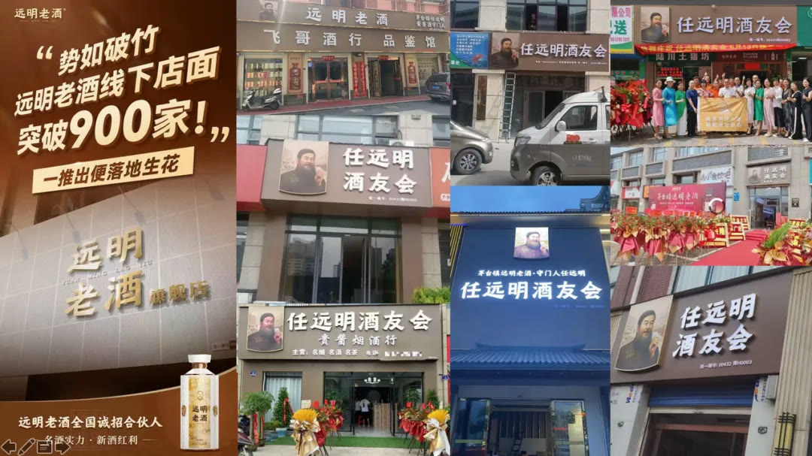
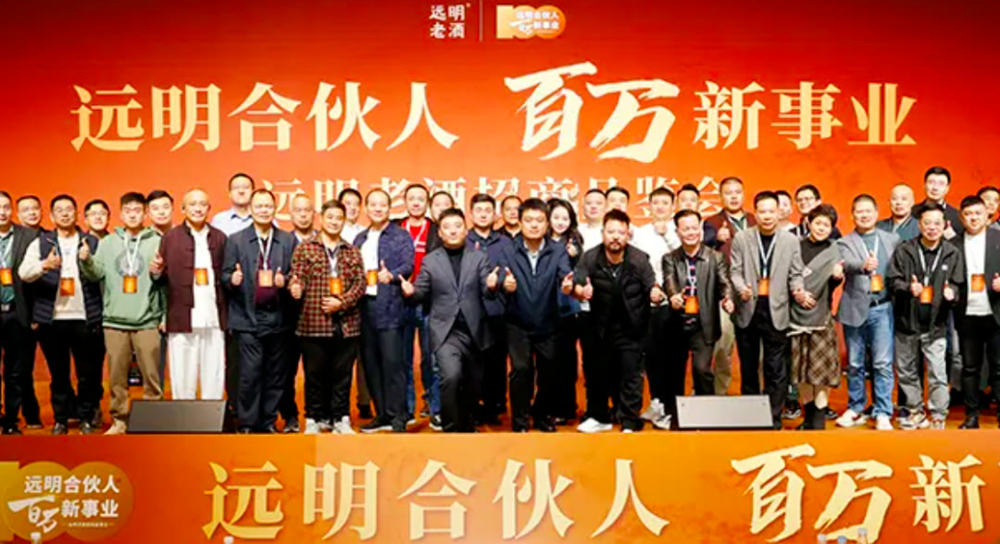
▲远明酒友会：远明线下品牌道场
两年以来，远明线下合伙人模式已开模成功，线下市场扭亏为盈，实现亿级营收、千万利润！全文总结成功的企业应该不断为未来投资，而不是只关注于在现有业务上更多地压榨利益。尤其是流量渠道来源单一的电商品牌，企业的流量必须自己做主，一定要通过品牌元媒体和多元流量渠道结构，建立自己的流量，这才是根本。否则，品牌与单一渠道强绑定，如果这一渠道出现问题，品牌就有陷入系统性风险的风险。
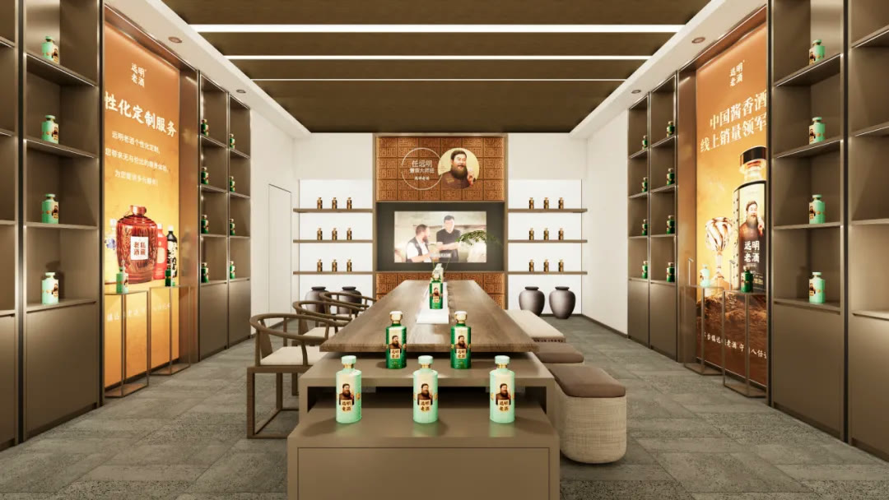
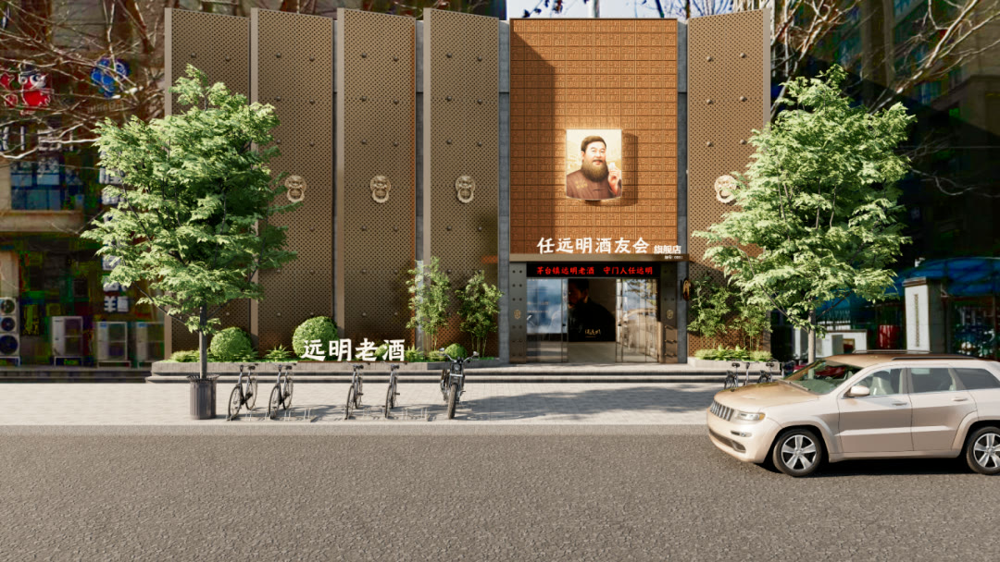
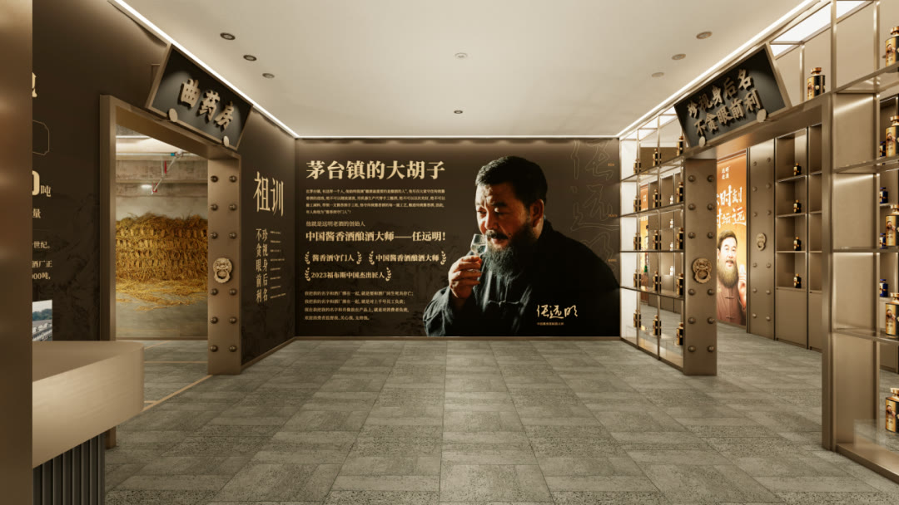
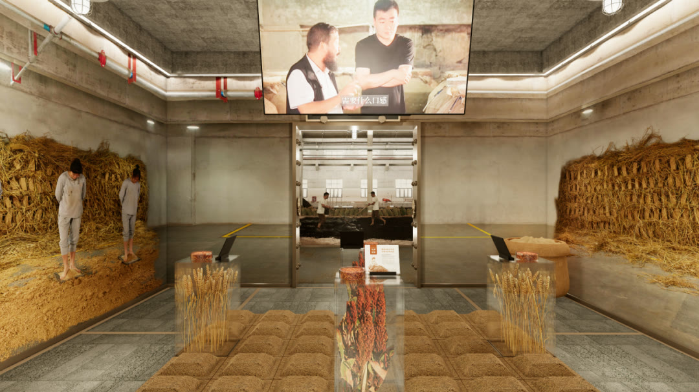
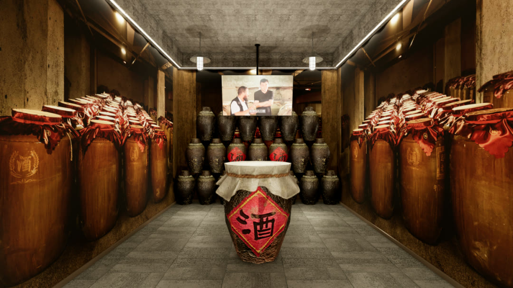
3 年的合作，华与华为远明老酒提出品牌人格化战略，并以“茅台镇任远明 酱香酒守门人”一举奠定远明老酒的品牌战略，用超级符号串联起所有产品包装，开启了远明老酒“中国酱香酒第一人格化品牌”之路。从此，远明老酒每一分广告投入、每一瓶产品销售，都是在往品牌储蓄罐里存钱，这些流量不仅在当下转化为产品销售，更是转化成了品牌资产，为企业的安全经营和永续经营奠定坚实的基础。企业得以生存，不管是什么商业模式，根本的原因在于企业对社会有用，成为了社会运行机制中有效率的组成部分，解决了某个社会问题。华与华为远明提出的「守门人」品牌战略，和从品牌战略生长出来的产品科学「传统酱香酒，守好五道门」、事业理论「酱酒好不好 关键是酿酒的人！」，都是为了解决传统酱香酒酿造工艺传承的问题。为远明老酒找到“酿酒人”文化母体，并通过酱酒行业首个酿酒师的节日酒师节、茅台镇第一个酿酒人主题文化基地（酒厂）和 315 假一赔百万品牌战略活动，让远明扎根“酿酒人”文化母体。当酿酒师成为判断酱酒第一标准，远明老酒就是第一品牌！3 年来，远明老酒成为中国酱香酒线上销量领军者，线下市场过亿规模，中国第一个互联网知名白酒品牌，在今年全面启动全国重点核心区域枢纽的机场、户外平台大规模广告投放！
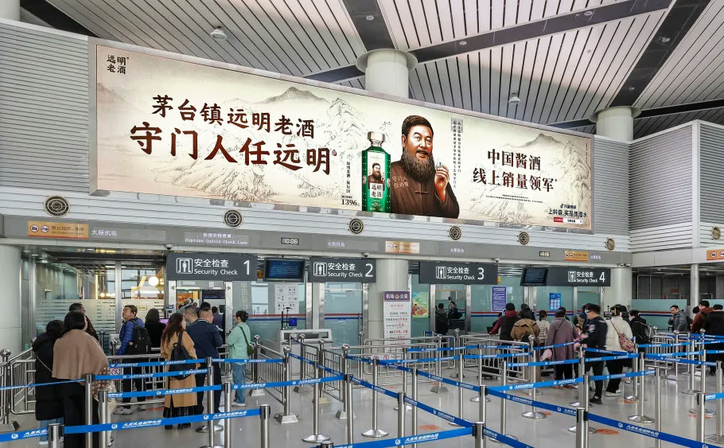